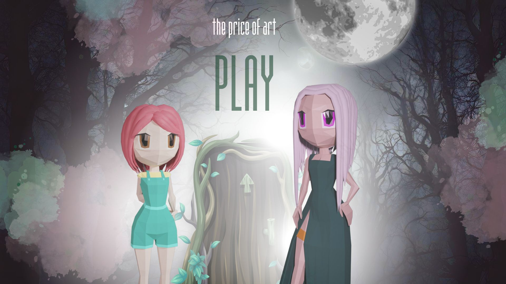

Hi, I'm Anastasiya Shcherbatsevich! Started the Master's in Game Studies and Engineering program at the University of Klagenfurt in March. It's been an incredible learning experience – I've already grown so much, both in knowledge and skills.
Here are some of the key experiences and feelings I've had during this semester:
Despite the excitement, there have been challenges along the way:
During the semester, I participated in the Ludum Dare Game Jam where we created a game called "The Price of Art". I contributed to the game as a narrative designer and also helped with the graphic design aspects.
Here is the link to the game.
Wow, I could not even imagine that I would study here! It's been amazing to see how much I've learned already. Between tackling those coding challenges and diving into game design theories, I feel like my brain is exploding with new ideas! I can't wait to see what the future holds in this crazy world of game development.
For more information about the Master's in Game Studies and Engineering program at the University of Klagenfurt, visit here.